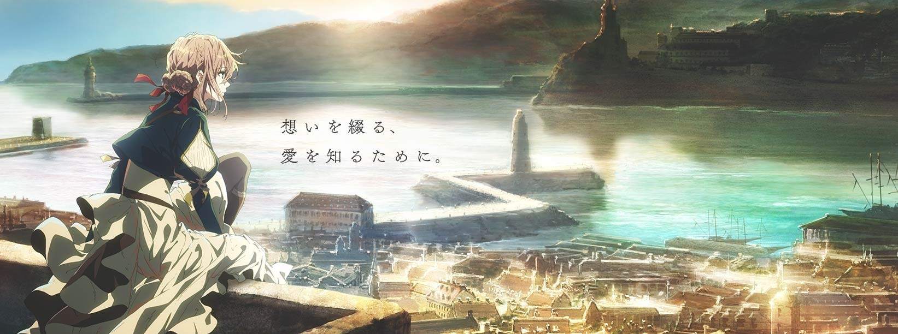

信件
信是媒介，也是情感被看见的方式。每一次代笔，都在连接两颗彼此错过的心。

Violet Evergarden Series Archive
她仍在寻找“我爱你”的意义，把无法言说的心意，写成能被抵达的信。
这不是一个只讲战争或离别的故事，而是关于“如何理解情感”的成长旅程。 薇尔莉特通过一封封信，学习表达、学习共情，也逐渐理解自己心中无法说出的思念。
信是媒介，也是情感被看见的方式。每一次代笔，都在连接两颗彼此错过的心。
过去并不会消失，但可以被重新理解。回望不是停留，而是为了继续向前。
战后的人们都在学习生活。作品用温柔的视角，描绘人与人如何互相治愈。